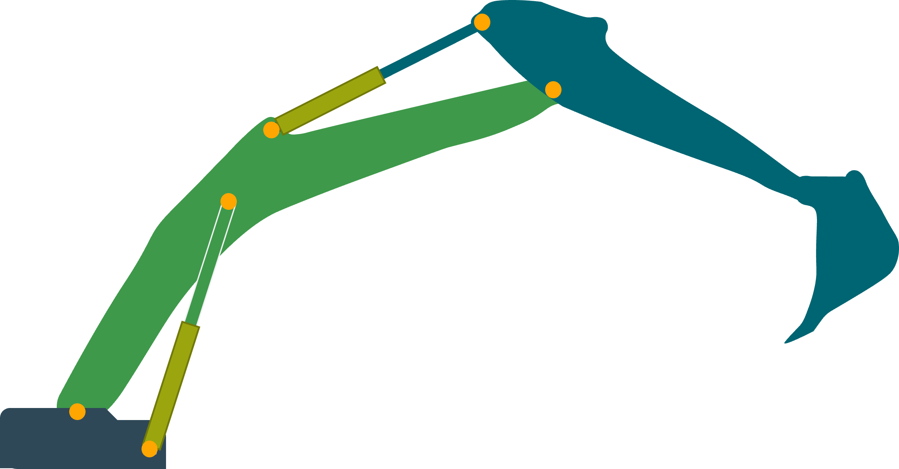
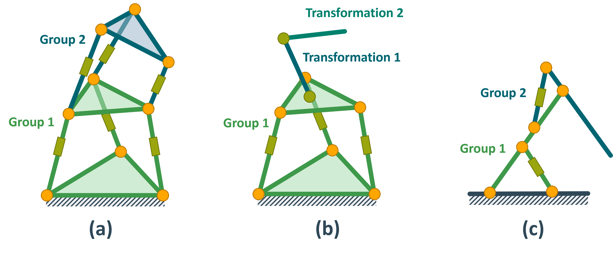
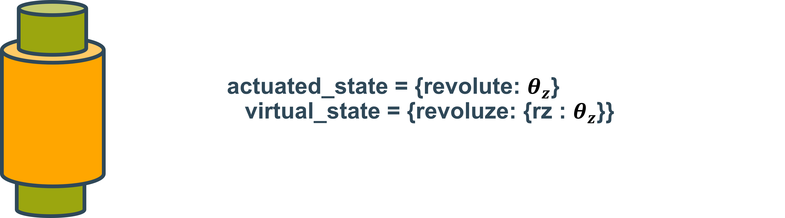

How TriP models Robots¶
This page describes how TriP models robots. It is advised to read this page before building your robot. Especially if the hybrid contains hybrid chains.
Transformations¶
A Kinematic model is made up of Coordinate systems. These coordinate systems are connected by transformations.
TriP implements its own Transormation class.
One can distinguish between static transformations and dynamic transformations. Dynamic transformations change depending on an internal state thereby modeling the joints of a mechanism.
The Transormation class has an attribute that manages the internal state.
In general, states can influence the transformation in arbitrary ways. Yet robotics uses several standard conventions.
The Transormation class currently supports:
Kinematic Groups¶
Most kinematic libraries rely only on such transformation objects because they only model open chains. An example for this is `IKPY<https://github.com/Phylliade/ikpy> `_ .
In an open chain, the position and orientation of a coordinate system depend only on one transformation (its parent).
But, consider the excavator arm below:
In this example, multiple coordinate systems have more than one parent since the transformations form a loop.
Such a loop is called a closed kinematic chain.
In practice, this is computationally expensive and unnecessary.
Important
To simplify the system one could treat the system as if the hinges of the excavator’s arm were directly actuated.
This simplified virtual chain contains no closed loops and thus standard kinematics algorithms can be used to compute forward or inverse kinematics.
To get the solution of the real excavator, one simply has to convert between the state of the hinges and the state of the hydraulic cylinders.
This can be done using some kind of mapping function based on trigonometry.
TriP embraces this mapping approach and implements it using the KinematicGroup class.
A KinematicGroup is made up of a virtual_chain, an actuated_state, and two mappings.
The mappings convert between the state of the virtual_chain, called virtual_state, and the state of the actuated joints called actuated_state.

Important
The virtual_chain has to be a single open chain without branches. The reasons for this will be discussed in the next section
divide a robot into groups¶
In the example above the excavator is modeled as a single group. However, it is also possible to divide the excavator into multiple groups. These groups can then be combined just like transformations. Multiple smaller groups have two advantages over a single large group:
For one it improves modularity, making it easier to reuse assembly parts.
But more importantly, it reduced computational cost. To keep virtual and actuated state consistent mapping has to be called every time part of one state changes. A single group mechanism would mean updating every state. This problem is especially bad for branching mechanisms. Consider a four-legged robot, setting the actuator of one leg would then mean updating all four legs. To prevent this problem outright the virtual chain can not contain branches.
In summary, groups should be defined as small as possible. Small in this case referring to the number of actuators that have to be grouped. The minimum size is defined by the closed chains. Consider the following mechanism

Grouping a) and c) are valid groups, with a) being more performant. However the Grouping in b) is not valid. The reason is that the state of the top platform depends on the state of all three green prismatic joints.
These considerations lead to the following guidelines for building hybrid robots:
Important
Every closed chain should be modeled by a Group. Every open-chain should be modeled by Transformations. For example:
The excavator has two actuated states and two virtual states. These are the lengths hydraulic cylinders \(a_1\),:math:a_2 and the arm angles \(q_1\),:math:q_2. Since each cylinder length \(a_i\) controllrols one arm angle \(q_i\), the excavator can be divided into two groups. These are visualized by the green and blue parts respectively.
The mappings for each group can be calculated using trigonometry:

The corresponding code looks like this:
1 2 3 4 5 6 7 8 9 10 11 12 13 14 15 16 17 18 19 20 21 22 23 24 25 26 27 28 29 30 31 32 33 34 35 36 37 38 39 40 41 42 43 44 45 46 47 48 49 50 51 52 |
l_1 = 1
l_2 = 0.7
l_3 = 1.2
l_4 = 0.4
l_5 = 1.7
# zero conventions for the actuated joints
a_1_offset = 0
a_2_offset = 0
virtual_joint_1 = Transformation(name="q_1",
values={'ry': 0},
state_variables=['ry'])
link_1 = Transformation(name="link_1",
values={'tx': l_1+l_3+0.4})
virtual_joint_2 = Transformation(name="q_2",
values={'ry': radians(-90)},
state_variables=['ry'])
link_2 = Transformation(name="link_2",
values={'tx': l_5})
################################################
# Direct mappings using geometric calculations #
################################################
def geometric_q_to_a_group_1(state: Dict[str, float], tips: Dict[str, float] = None):
# convert joint angle to triangle angle
q_1 = radians(90) - state['q_1']['ry']
return {'a_1': np.sqrt(l_1**2+l_2**2-2*l_1*l_2*np.cos(q_1))}
def geometric_a_to_q_group_1(state: Dict[str, float], tips: Dict[str, float] = None):
a_1 = state['a_1'] + a_1_offset
return {'q_1': {'ry': np.arccos((l_1**2+l_2**2-a_1**2)/(2*l_1*l_2))}}
def geometric_q_to_a_group_2(state: Dict[str, float], tips: Dict[str, float] = None):
q_2 = -1 * state['q_2']['ry'] # convert joint angle to triangle angle
return {'a_2': np.sqrt(l_3**2+l_4**2-2*l_3*l_4*np.cos(q_2))}
def geometric_a_to_q_group_2(state: Dict[str, float], tips: Dict[str, float] = None):
a_2 = state['a_2'] + a_2_offset
return {'q_2': {'ry': np.arccos((l_3**2+l_4**2-a_2**2)/(2*l_3*l_4))}}
geometric_group_1 = KinematicGroup(name="geometric group 1",
virtual_chain=[virtual_joint_1, link_1],
actuated_state={'a_1': 0},
|
actuated state vs virtual state¶
If one looks at the code above one can see that the dictionary values of the actuated state in lines 26 and 36 are float values, while the values of the virtual states in lines 32 and 39 are dictionaries.
This difference is because virtual states always specify convention parameters of a Transformation.
Actuated values on the other hand are not associated with a Transformation and thus don’t adhere to transformation conventions.
This is an important difference to keep in mind when dealing with both states. Below are a few examples of joints and how their actuated and virtual states would differ.

Using closure equations¶
While direct mappings are always preferable it is not always possible to find a direct function. In this case, one can always resort to the closure equation. Since TriP is based on mappings the closure equation is used to set up mapping functions that solve the closure equation. For the mapping from actuated state to virtual state, the actuated states are fixed and the virtual states calculated. Likewise, for the reverse mapping, the virtual state is fixed while the actuated states are calculated.
The setup of the closure equation will require extra transformations. This can be done by building a full open-chain or for simple chains by directly setting up the transformation matrices using the Utility submodule. In this case of the excavator, the following joints can be defined:

The solving of the closure equation can be performed by casadi, which TriP also uses for inverse kinematics calculations:
1 2 3 4 5 6 7 8 9 10 11 12 13 14 15 16 17 18 19 20 21 22 23 24 25 26 27 28 29 30 31 32 33 34 35 36 37 38 39 40 41 42 43 44 45 46 47 48 49 50 51 52 53 54 55 56 57 58 59 60 61 62 63 64 65 66 67 68 69 70 71 72 73 74 75 76 77 | virtual_chain=[virtual_joint_2, link_2],
actuated_state={'a_2': 0},
actuated_to_virtual=geometric_a_to_q_group_2,
virtual_to_actuated=geometric_q_to_a_group_2,
parent=geometric_group_1)
geometric_excavator = Robot([geometric_group_1, geometric_group_2])
###################################################################
# mappings using colsure equation solution geometric calculations #
###################################################################
opts = {'ipopt.print_level': 0, 'print_time': 0}
closure_1_state = casadi.SX.sym('cls_1_q', 3)
cls_q_1 = hom_rotation(y_axis_rotation_matrix(closure_1_state[0]))
cls_l_1 = hom_translation_matrix(t_x=l_1)
cls_qs_2 = hom_rotation(y_axis_rotation_matrix(closure_1_state[1]))
cls_a_1 = hom_translation_matrix(t_x=closure_1_state[2])
cls_a_1z = hom_translation_matrix(t_x=a_1_offset)
cls_1_trafo = cls_q_1 * cls_l_1 * cls_qs_2 * cls_a_1 * cls_a_1z
cls_1_trafo_pos = get_translation(cls_1_trafo)
c_1 = (cls_1_trafo_pos[0]-l_2)**2 + \
cls_1_trafo_pos[1]**2 + cls_1_trafo_pos[2]**2
def closure_q_to_a_group_1(state: Dict[str, float]):
nlp = {'x': closure_1_state[1:], 'f': c_1, 'p': closure_1_state[0]}
nlp_solver = casadi.nlpsol('q_to_a', 'ipopt', nlp, opts)
solution = nlp_solver(x0=[0, 0], p=[state['q_1']['ry']])
sol_vector = np.array(solution['x'])
return {'a_1': sol_vector[1]}
def closure_a_to_q_group_1(state: Dict[str, float]):
nlp = {'x': closure_1_state[:1], 'f': c_1, 'p': closure_1_state[2]}
nlp_solver = casadi.nlpsol('a_to_q', 'ipopt', nlp, opts)
solution = nlp_solver(x0=[0, 0], p=[state['a_1']])
sol_vector = np.array(solution['x'])
return {'q_1': {'ry': sol_vector[0]}}
closure_2_state = casadi.SX.sym('cls_2_q', 3)
cls_q_2 = hom_rotation(y_axis_rotation_matrix(closure_2_state[0]))
cls_l_4 = hom_translation_matrix(t_x=l_4)
cls_qs_4 = hom_rotation(y_axis_rotation_matrix(closure_2_state[1]))
cls_a_2 = hom_translation_matrix(t_x=closure_2_state[2])
cls_a_2z = hom_translation_matrix(t_x=a_1_offset)
cls_2_trafo = cls_q_2 * cls_l_4 * cls_qs_4 * cls_a_2 * cls_a_2z
cls_2_trafo_pos = get_translation(cls_1_trafo)
c_2 = (cls_2_trafo_pos[0]+l_3)**2 + \
cls_2_trafo_pos[1]**2 + cls_2_trafo_pos[2]**2
def closure_q_to_a_group_1(state: Dict[str, float]):
nlp = {'x': closure_2_state[1:], 'f': c_2, 'p': closure_2_state[0]}
nlp_solver = casadi.nlpsol('q_to_a', 'ipopt', nlp, opts)
solution = nlp_solver(x0=[0, 0], p=[state['q_1']['ry']])
sol_vector = np.array(solution['x'])
return {'a_2': sol_vector[1]}
def closure_a_to_q_group_1(state: Dict[str, float]):
nlp = {'x': closure_2_state[:1], 'f': c_2, 'p': closure_2_state[2]}
nlp_solver = casadi.nlpsol('a_to_q', 'ipopt', nlp, opts)
solution = nlp_solver(x0=[0, 0], p=[state['a_1']])
sol_vector = np.array(solution['x'])
return {'q_2': {'ry': sol_vector[0]}}
closure_group_1 = KinematicGroup(name="geometric group 1",
|